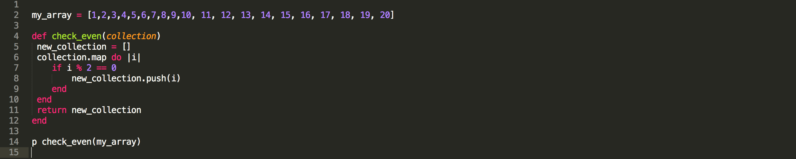

Ruby Public Methods

By: Arthur Head on July 12, 2015
Arthur's Blog
By: Arthur Head on July 12, 2015
Reading Ruby's method definitions in the Ruby Docs, like the definition of the map method pictured above, can sometimes be a bit confusing. After reading that definition I figured it would be best to break it down into smaller explainable pieces. The first piece mentions "Invoking the given block". A block in Ruby is code or a set of instructions for a program to evaluate and execute, and usually between curly brackets {}. It then mentions, invoking the block "once for each element of self". Self refers to the enumerable object that map is being applied to. The block runs once for each element in the object. The exclamation point after map! in the picture above means that the object elements will be replaced with the value returned by the block. If it was just "map" with no exclamation than the original object would be unchanged. Map always returns an array the same size as the original enumerable.
It's also worth pointing out that the map and collect methods are interchangable. Map and collect both do the same thing, and the choice to use one vs. the other comes down to a personal preference of the naming convention.
So let's take a look at map in action:

First we declare an array with numbers to use the map method on. Then we create a method called check_even that accepts a collection as a parameter. Inside the check_even method we'll apply our map magic to whatever collection gets passed in. In this case map will apply the code block in between the "do" and "end" on each element in my_array. If the element is divisible by two, then inside map's code block, we will push that element into a new array called new_collection. Finally we return new_collection. Printing the result of check_even(my_array) to the console will result in an array holding only even values.